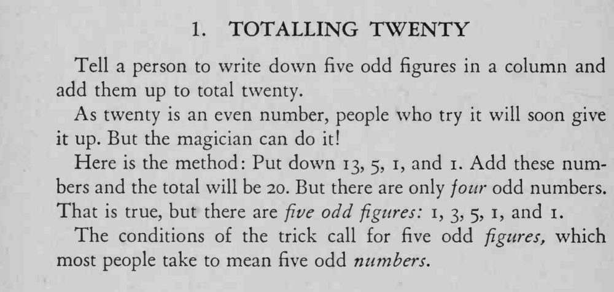

魔术师让人用五个奇数相加凑出二十；人人都以为不可能，他却轻松写成。
关键在「五个奇数」和「五个奇数数字」的文字差别，先别急着点破。

Tell a person to write down five odd figures in a column and add them up to total twenty. As twenty is an even number, people who try it will soon give it up. But the magician can do it! Here is the method: Put down 13, 5, 1, and 1. Add these numbers and the total will be 20. But there are only four odd numbers. That is true, but there are five odd figures: 1, 3, 5, 1, and 1. The conditions of the trick call for five odd figures, which most people take to mean five odd numbers.